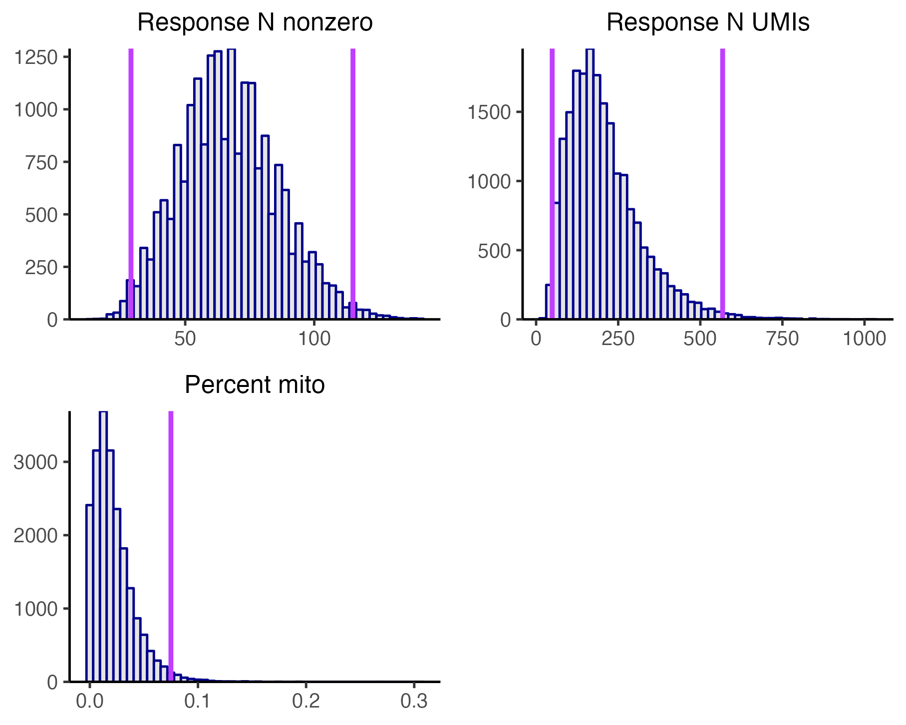

4 Run quality control
The fourth step of the pipeline is to run quality control (QC).
We begin by loading the sceptre package.
We initialize sceptre_objects corresponding to the high-MOI CRISPRi and low-MOI CRISPRko data. We call the first three pipeline functions on both datasets: import_data(), set_analysis_parameters(), and assign_grnas().
# low-MOI CRISPRko data
# 1. import data
sceptre_object_lowmoi <- import_data(response_matrix = lowmoi_example_data$response_matrix,
grna_matrix = lowmoi_example_data$grna_matrix,
extra_covariates = lowmoi_example_data$extra_covariates,
grna_target_data_frame = lowmoi_example_data$grna_target_data_frame,
moi = "low")
positive_control_pairs <- construct_positive_control_pairs(sceptre_object_lowmoi)
discovery_pairs <- construct_trans_pairs(sceptre_object = sceptre_object_lowmoi,
positive_control_pairs = positive_control_pairs)
# 2-3. set analysis parameters, assign gRNAs
sceptre_object_lowmoi <- sceptre_object_lowmoi |>
set_analysis_parameters(discovery_pairs = discovery_pairs,
positive_control_pairs = positive_control_pairs) |>
assign_grnas()# high-MOI CRISPRi data
# 1. import data
sceptre_object_highmoi <- import_data(response_matrix = highmoi_example_data$response_matrix,
grna_matrix = highmoi_example_data$grna_matrix,
grna_target_data_frame = grna_target_data_frame_highmoi,
moi = "high",
extra_covariates = highmoi_example_data$extra_covariates,
response_names = highmoi_example_data$gene_names)
positive_control_pairs <- construct_positive_control_pairs(sceptre_object_highmoi)
discovery_pairs <- construct_cis_pairs(sceptre_object_highmoi,
positive_control_pairs = positive_control_pairs,
distance_threshold = 5e6)
# 2-3. set analysis parameters, assign gRNAs
sceptre_object_highmoi <- sceptre_object_highmoi |>
set_analysis_parameters(discovery_pairs = discovery_pairs,
positive_control_pairs = positive_control_pairs,
side = "left") |>
assign_grnas(parallel = TRUE)We are now ready to run QC. We apply QC both at the level of the cell and at the level of the target-response pair. Cellwise QC involves filtering cells on the covariates response_n_nonzero, response_n_umis, and response_p_mito. In low-MOI we additionally remove cells that contain multiple gRNAs. Pairwise QC involves removing pairs for which there are insufficiently many cells or there is insufficiently high expression of the response.
4.1 Plot the cell-specific covariates
A helpful initial step in applying QC is to visualize the distribution of the cell-specific covariates. To this end we call the function plot_covariates(), which creates a histogram of the covariates response_n_nonzero, response_n_umis, and (if applicable) response_p_mito. Cellwise QC removes cells that lie in the extreme right tail of the response_p_mito distribution or that lie in the extreme left or right tail of the response_n_nonzero or response_n_umis distribution. To help guide the selection of QC thresholds, plot_covariates() plots candidate QC thresholds as vertical lines on the histograms. The optional arguments response_n_nonzero_range, response_n_umis_range, and p_mito_threshold control the location of these candidate QC thresholds. response_n_nonzero_range (resp., response_n_umis_range) is a length-two vector of quantiles (default: c(0.01, 0.99)) indicating the location at which to draw candidate QC thresholds on the response_n_nonzero (resp., response_n_umis) histogram. Next, p_mito_threshold is a single numeric value in the interval [0,1] specifying the location at which to draw a candidate QC threshold on the response_p_mito plot. We call plot_covariates() on the high-MOI CRISPRi sceptre_object (i.e., sceptre_object_highmoi), setting p_mito_threshold to 0.075.
plot_covariates(sceptre_object_highmoi, p_mito_threshold = 0.075)Inspecting these plots (and tinkering with response_n_nonzero_range, response_n_umis_range, and p_mito_threshold as necessary) helps guide the selection of reasonable QC thresholds. In general it is good to clip long, asymmetric tails so as to remove outlier cells. The QC thresholds appear to be drawn at sensible locations on these data.
We also call plot_covariates() low-MOI CRISPRko data, again setting p_mito_threshold to 0.075.
plot_covariates(sceptre_object_lowmoi, p_mito_threshold = 0.075)
The low-MOI plot is broadly similar to its high-MOI counterpart. In particular, the QC thresholds appear to be drawn at sensible locations.
4.2 QC parameters
We apply QC to a sceptre_object by calling the function run_qc(). run_qc() takes the arguments sceptre_object, response_n_umis_range, response_n_nonzero_range, p_mito_threshold, additional_cells_to_remove, n_nonzero_trt_thresh, and n_nonzero_cntrl_thresh. The only required argument among these is sceptre_object; the rest are set to reasonable defaults.
4.2.1 Cellwise QC parameters
The parameters response_n_umis_range, response_n_nonzero_range, p_mito_threshold, and additional_cells_to_remove control cellwise QC. response_n_umis_range (resp., response_n_nonzero_range) is a length-two vector of quantiles (default c(0.01, 0.99)); cells whose response_n_umis (resp., response_n_nonzero) quantile falls outside this range are excluded. Next, p_mito_threshold is a number in the interval [0,1]; cells whose value for response_p_mito falls above this threshold likewise are excluded. (Note that p_mito_threshold is not a quantile but rather an absolute number). Finally, additional_cells_to_remove is an integer vector specifying the (1-based) indices of additional cells to remove. Cells flagged by additional_cells_to_remove are removed before applying any other cellwise QC filer.
4.2.2 Pairwise QC parameters
The parameters n_nonzero_trt_thresh and n_nonzero_cntrl_thresh control pairwise QC (i.e., QC at the level of the target-response pair). Recall that for a given target-response pair, we divide the cells into treatment and control groups. The treatment group consists of the cells that contain a gRNA targeting the given target, and the control group consists of the cells against which the treatment cells are compared. (The control group can be either the complement set or NT cells; this choice is governed by the control_group parameter.) We define the “number of nonzero treatment cells” (resp., the “number of nonzero control cells”) as the number of cells in the treatment group (resp., control group) that contain nonzero expression of the response. (We sometimes use the shorthand n_nonzero_trt and n_nonzero_cntrl to refer to the number of nonzero treatment cells and control cells, respectively.) n_nonzero_trt and n_nonzero_cntrl are reasonable metrics of pair quality, with higher quality pairs exhibiting larger values for n_nonzero_trt and n_nonzero_cntrl. The schematic below illustrates the definition of n_nonzero_trt and n_nonzero_cntrl.

n_nonzero_trt and n_nonzero_cntrl. Each square represents a cell, and the integer within a square represents the UMI count of the response in the corresponding cell. Some cells belong to the treatment group (blue), and others belong to the control group (red). n_nonzero_trt (resp., n_nonzero_cntrl) is the number of cells in the treatment group (resp., control group) with nonzero expression of the response.sceptre tabulates n_nonzero_trt and n_nonzero_cntrl for each target-response pair. Pairs for which n_nonzero_trt is less than n_nonzero_trt_thresh or n_nonzero_cntrl is less than n_nonzero_cntrl_thresh are excluded. Both n_nonzero_trt_thresh and n_nonzero_cntrl_thresh are set to 7 by default.
4.3 Run QC
We call run_qc() on sceptre_object_highmoi and sceptre_object_lowmoi to run QC on the high-MOI CRISPRi and low-MOI CRISPRko data. In both cases we set p_mito_threshold to 0.075 but otherwise fall back on the default parameter values.
We can call the function plot() on the resulting sceptre_object to render a visualization of the outcome of the QC step. We call plot() on sceptre_object_lowmoi as an example.
plot(sceptre_object_lowmoi)
We described in Section 4 of The whole game how to interpret this figure. The top panel displays the percentage of cells removed (vertical axis) as a result of applying the different cellwise QC filters (horizontal axis). For example, over 20\(\%\) of cells were removed because they contain multiple gRNAs, and about 2\(\%\) of cells were removed because they exhibit extremely high or extremely values for response_n_nonzero. Note that the “multiple gRNAs” filter in general is applied only to low-MOI data. Next, the bottom panel plots the set of discovery target-response pairs, where the vertical (resp., horizontal) position of a given pair indicates its n_nonzero_cntrl (resp., n_nonzero_trt) value. Pairs with a sufficiently large value for n_nonzero_cntrl and n_nonzero_trt (colored in green) pass pairwise QC; all other pairs are removed.
Finally, we call print() on sceptre_object_lowmoi to print a summary of the status of the analysis. The summary contains information about cellwise and pairwise QC; see the first entry under the “Attributes of the data” field and the second two entries under the “Analysis parameters” field.
print(sceptre_object_lowmoi)An object of class sceptre_object.
Attributes of the data:
• 20729 cells (15348 after cellwise QC)
• 299 responses
• Low multiplicity-of-infection
• 101 targeting gRNAs (distributed across 26 targets)
• 9 non-targeting gRNAs
• 6 covariates (bio_rep, grna_n_nonzero, grna_n_umis, response_n_nonzero, response_n_umis, response_p_mito)
Analysis status:
✓ import_data()
✓ set_analysis_parameters()
✓ assign_grnas()
✓ run_qc()
✗ run_calibration_check()
✗ run_power_check()
✗ run_discovery_analysis()
Analysis parameters:
• Discovery pairs: data frame with 7765 pairs (6205 after pairwise QC)
• Positive control pairs: data frame with 9 pairs (9 after pairwise QC)
• Sidedness of test: both
• N nonzero treatment cells threshold: 7
• N nonzero control cells threshold: 7
• Control group: non-targeting cells
• Resampling mechanism: permutations
• gRNA grouping strategy: union
• Formula object: log(response_n_nonzero) + log(response_n_umis) + bio_rep
gRNA-to-cell assignment information:
• Assignment method: maximum
• Mean N cells per gRNA: 188.45
• Mean N gRNAs per cell (MOI): not computed when using "maximum" assignment methodUsers may wonder why sceptre does not implement response-wise QC (e.g., filtering out lowly expressed responses). The reason is that pairwise QC is in some sense stronger than response-wise QC. Suppose for example that a given response exhibits zero expression across cells. Target-response pairs containing this response will have an n_nonzero_trt and n_nonzero_cntrl value of zero and thus be filtered out, in effect filtering out the response as well.